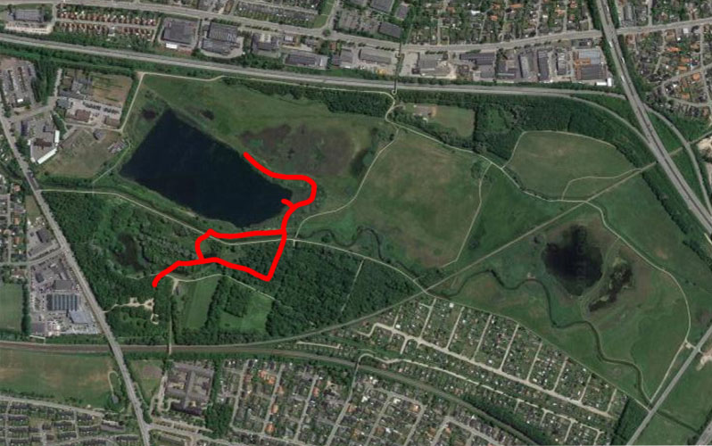
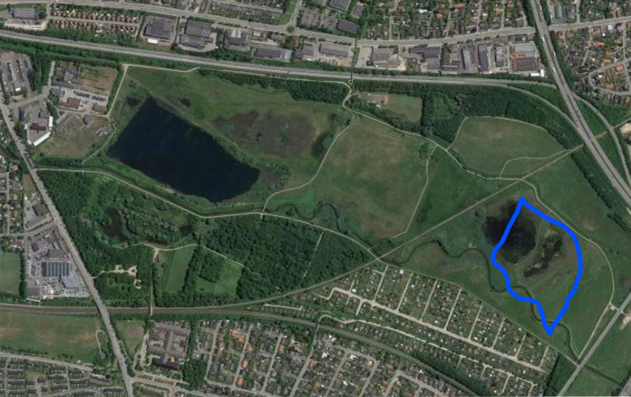
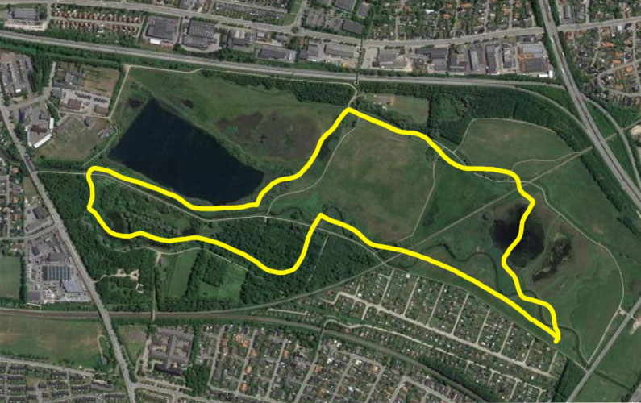

Østerådalen Nord

North is approx. 2 km. In addition, three hiking routes have been marked. Under normal weather conditions, most of the area roads and paths passable for wheelchair users.

The "Indkilderuten" starts from the car park at Indkildevej. The trip is 1 km and can be completed in ½ hour. Red route: The "Bird Route" goes out to the birdhouse and the bird tower at Lergraven. The trip is almost 2 km.

"Around Østerådalen". The trip is 4.1 km and can be done in less than 2 hours.